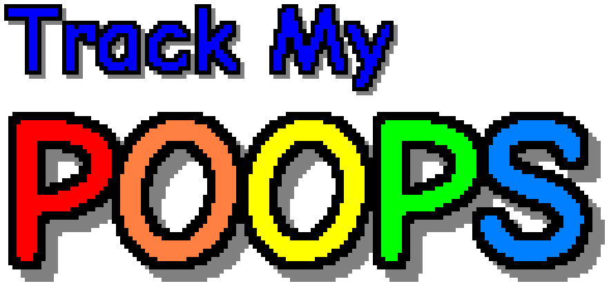
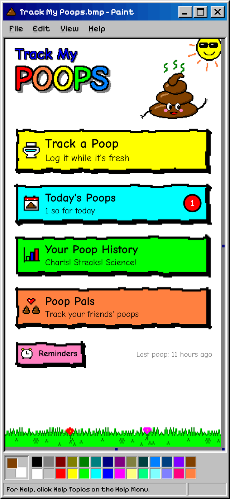
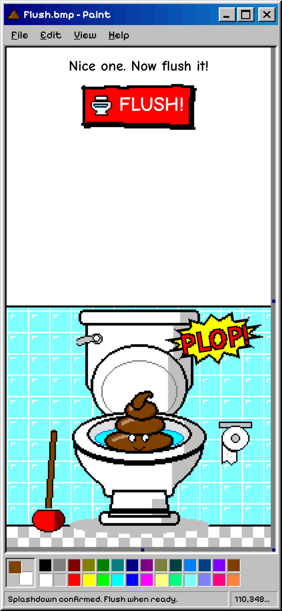
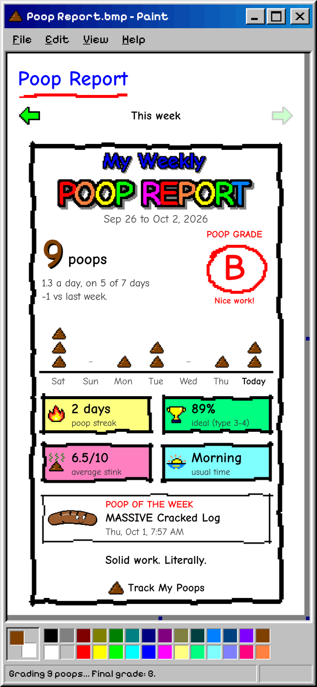
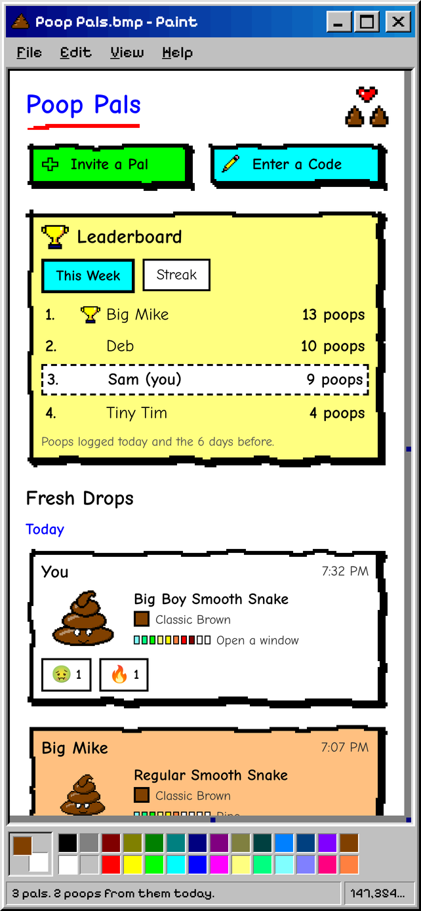

The poop tracker from 1998.
Log a poop in a few quick taps and rate the stink. Watch it drop into a hand-drawn toilet with a PLOP. Hit FLUSH and get a fart. Ten different farts, actually.
-

Track a Poop
Color, kind, size, stink and anything weird. The kinds are the Bristol Stool Scale with better names, like Pebbles, Lumpy Log and Smooth Snake.
-

Flush It
It lands in the toilet with a PLOP. Hit FLUSH, enjoy one of ten farts, then turn the whole thing into a GIF for the group chat.
-

Your Poop History
Charts! Streaks! Science! Poop-free days, your ideal poop percentage, a calendar and a diary of every weird note.
-

Poop Report and Wrapped
A report card with a grade every Sunday, and your whole year in poops every December. Both made to be shared.
-

Poop Pals
Add friends with a one-time code. See each other's poops, react, and fight for the top of the leaderboard. You pick what they see.
-

Reminders
At the times you pick. They back off once you've logged one that day, and get a little worried if it's been a couple of days.
-

Your log lives on your phone
No account, no sign-up. Poop Pals only gets what you choose to share, and leaving deletes it. Free with ads, or flush them away for good with a one-time purchase. Privacy policy
Screenshots
-

Everything is one tap from home. -

Plop. Now flush it. -

Your weekly Poop Report, graded in red pen. -

Poop Pals: who's regular this week?
Track My Poops is for fun and general awareness, not medical advice. If something seems off, talk to a doctor.